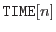
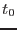
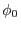
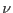
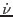

XMM-Newton Science Analysis System
phasecalc (dscalc-2.8) [xmmsas_20170112_1337-16.0.0]
Description
Given an ephemeris and a list of event tables, phasecalc
calculates the phase of each event in each of the tables. The
calculated values are stored in a column named PHASE. If the
column exists it is overwritten.
phasecalc
relies on the event table having a TIME
column and the two attributes MJDREF and TIMEZERO.
- MJDREF is the Modified Julian Day from which times are
calculated.
- TIMEZERO is the clock correction at the start of the
observation in seconds.
- phasecalc
also uses the TIMESYS keyword to determine the
Time System (UTC, TT, TAI) used in event table. If the TIMESYS keyword is
not UTC, the Reference Epoch time of the ephemeris is converted to the
appropriate Time System. In the absence of this keyword TT (XMM Time)
is assumed.
The time of event n is then:
where
 is the value stored in the TIME column.
An ephemeris is specified in terms of four quantities:
- reference epoch ; This is UTC.
- reference phase ;
- frequency  in Hz;
- frequency time derivative  in Hz/s.
The phase of event n is defined as:
Subsections
XMM-Newton SOC/SSC -- 2017-01-12